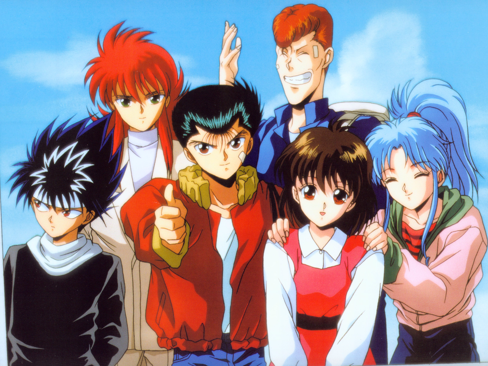
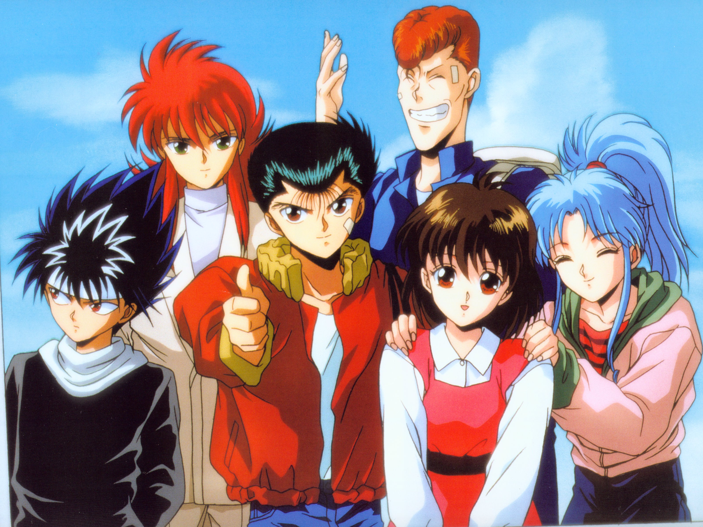

Yu Yu Hakusho is my personal favorite, and definitely an all-time classic series that is on the longer side. The creator went on to make another very successful series that got remade very recently.
When a middle school delinquent dies from an act of selflessness, in order to come back to life, he agrees to become a spirit detective and embarks on many adventures with his supernatural friends saving people in both the normal and the spirit realm.